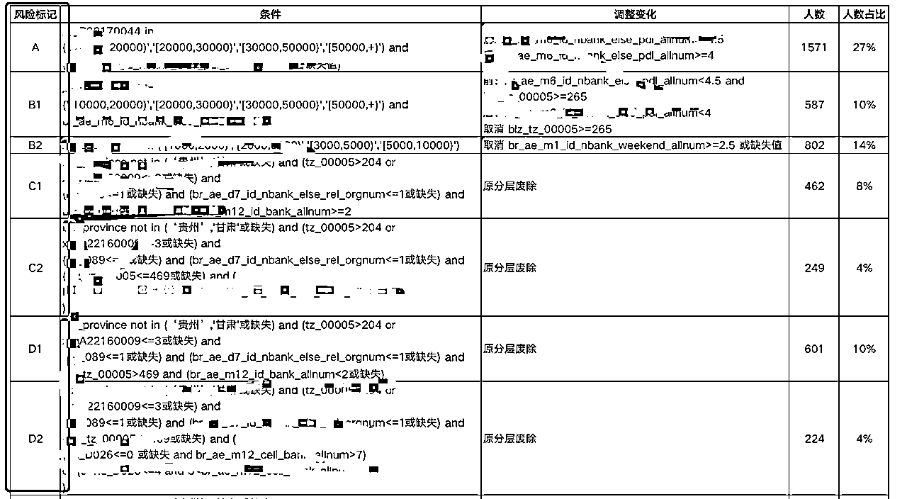

来源：https://ehmuf3y4zf.feishu.cn/docx/ZbAxd7OyjoZi6ixdgIPcfTpGnlb
前段时间在风向标里陆续看到有人发3C数码租赁（手机租赁为主）的风向标，也有圈友挖到了我2021年11月份发的：#资源对接# 过来交流沟通的。
#资源对接#
手机租赁项目，寻求流量合作，高客单价高回报。（备注生财）
从事这个行业4年多，今天跟大家聊点干货，把自己操盘行业Top的经验、心得、机会、风险介绍一下，希望大家能有所收获，找到合适的价值。
考虑到大部分圈友都不是这个行业的，所以我先简单来介绍一下这个行业是干嘛的。
简单地说，这个行业就是让你租用手机或其他电子设备，而不需要一次性买下它们。就像你租公寓一样，你每月付费，享受手机的各种功能，而不需要担心设备的完全所有权。不论你是想试用最新的设备，还是只需要短期使用，这都是个不错的选择。
首先，我们得解答这个大家都关心的问题：手机租赁行业能赚钱吗？答案是肯定的。
事实上，我们能通过复利的方式来获取巨大的收益。看看这个数据模型，你会发现三年时间我们的投资可能会有10倍的回报。对于一个投入1000万的项目来说，三年之后，你的债权可能会接近1亿。
下图测算模型为单月发货量150台测算：
这个业务的模式就是租赁，和其他商业化租赁一样，简单来讲，租赁就是一种碎片化的使用权交易，而所有权并不转移。现在，租赁行业主要有三种模式：租完归还/买断，租完即送，以及短租模式。每种模式都有它自身的优点和适用场景。
参考行业：充电宝租赁、电脑租赁、游戏机租赁等
目前租赁行业常见的几种模式：
1、租完归还/买断：
比如一台手机的采购价是10000元，12个月年租金为8000，买断金为5000，租金+买断金=13000元。
2、租完即送：
比如一台手机的采购价是10000元，12个月年租金为13000，租完手机归客户所有。
3、短租模式：
可以因为临时周转备用等需求，租赁1月-6月不等，随租随还。
1、行业风险，会不会有一些行业的调整和变化，或者行业监管等。
2、风控风险，欺诈用户风险，控制逾期率，能控制多低的逾期率，直接决定了利润有多高。
以上这两点是我们必须考虑到租赁行业的风险。这主要包括行业风险和风控风险。毕竟，我们不能控制行业的变化，但我们可以控制逾期率。如果我们能有效地控制逾期率，那么我们就能获得更高的利润。
我觉得，租赁行业是一个租赁生态，其中有很多赚钱的机会，只要我们找到正确的方式。比如，我们可以从流量、软件开发、风控、手机发货、资金合作、直接下场做业务和司法起诉等方面来获得收益，可低投入、可高投入。我根据自己的从业经历，把看到的一些一些可以做的业务机会简单罗列如下：
1、流量：目前行业流量CPS在500左右，直播、短视频、私域、微信生态、支付宝生态、小红书、线下等。
2、软件开发：租赁平台的开发、维护和运营、三方数据服务、短信服务、电子合同。
3、风控：三方数据供应、征信服务。
4、手机发货：全新手机供应、二手手机供应等。
5、资金合作：一定要找靠谱稳定的。
6、直接下场做业务：可以入驻平台、也可以自己搭建平台，各有利弊。
7、司法起诉：律所或者法院起诉。
在这个业务的不同环节均有朋友做的很不错，获得非常丰厚的利润。所以，有兴趣的圈友可以根据自己的优势去看看机会。
租赁行业的三大要点是：流量，风控和资金。换句话说，我们需要找到精准的用户，控制风险，并确保有足够的资金去采购手机。这三个因素是租赁业务的关键。
1.流量：去哪里获取精准的需求用户？
2.风控：用户来了之后，我能不能把手机租给他们？
3.资金：有很多的精准用户，我的资金能采购多少手机给他们？
而现在，我看到大部分的流量都来自于支付宝，这是一个我们可以利用的资源。我们也需要通过大数据和人工审核来控制风险，同时寻找合适的资金方。
这部分非常关键，我详细展开给大家分享一下（如果真听不懂也没关系）
流量：
租赁业务生态始于支付宝，目前来说大部分的流量还都是来源于支付宝内部，大家在支付宝首页、芝麻信用租频道、支付宝支付后等都可以看到很多租赁平台。
随着越来越多的玩家入场，租赁行业的流量也扩展为全平台：直播、图文平台、线下等等。
风控：
目前常见的风控手段为：机审风控（三方大数据和征信）+人工审核，下图为实盘的一个风控策略，把进件用户通过数据模型做用户分层：A B C D，或者做成评分（同理芝麻分），来大概判断正常还款和逾期客户的概率：

风控策略是平衡风险与收益的手段，风控策略最重要的不是追求无坏账无逾期，而是利润最大化。
我们通过大数据机审风控、人工审核、保险服务、司法起诉等来控制风险，提高收益。
资金：
目前行业资金主要分为：自有资金、融资租赁公司的资金、金融租赁公司的资金、金融保理资金等（资金方年化12%-15%）
总结这三点，就是租赁业务的卡点和瓶颈。没有用户赚不到钱；有用户风控做不好，租出去收不回来也赚不到钱；有用户、风控也很好，没钱发货也赚不到钱。
以上内容是自己的一些心得和分享，不一定全对，同时行业内容比较多，很难在一篇文章描述详细，欢迎圈友交流指正。
在结束这次分享之前，在此也提出一个小目标：在未来的2-3年中，我想要合作并孵化5个年GMV过亿的租赁共享平台。这可能是一个挑战，但我相信，只要我们有决心，我们就能实现它。欢迎广大圈友监督和见证！